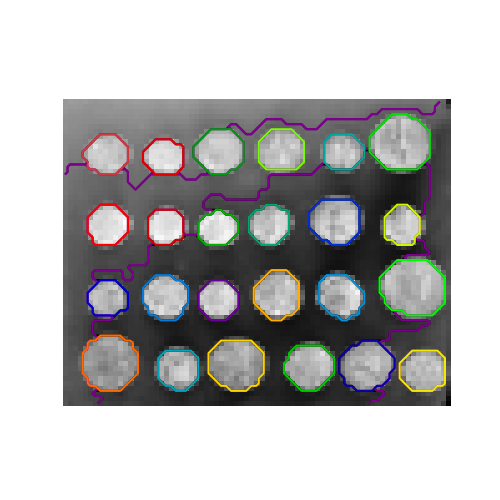
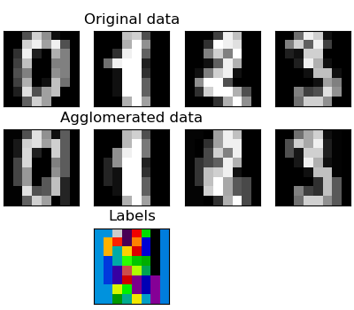
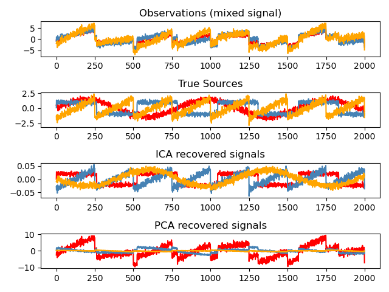

Unsupervised learning: seeking representations of the data#
Clustering: grouping observations together#
>>> # Set the PRNG
>>> import numpy as np
>>> np.random.seed(1)
K-means clustering#
Note that there exist a lot of different clustering criteria and associated algorithms. The simplest clustering algorithm is K-means.
>>> from sklearn import cluster, datasets
>>> X_iris, y_iris = datasets.load_iris(return_X_y=True)
>>> k_means = cluster.KMeans(n_clusters=3)
>>> k_means.fit(X_iris)
KMeans(n_clusters=3)
>>> print(k_means.labels_[::10])
[1 1 1 1 1 2 0 0 0 0 2 2 2 2 2]
>>> print(y_iris[::10])
[0 0 0 0 0 1 1 1 1 1 2 2 2 2 2]
Warning
There is absolutely no guarantee of recovering a ground truth. First, choosing the right number of clusters is hard. Second, the algorithm is sensitive to initialization, and can fall into local minima, although scikit-learn employs several tricks to mitigate this issue.
For instance, on the image above, we can observe the difference between the ground-truth (bottom right figure) and different clustering. We do not recover the expected labels, either because the number of cluster was chosen to be to large (top left figure) or suffer from a bad initialization (bottom left figure).
It is therefore important to not over-interpret clustering results.
Raw image
K-means quantization
Equal bins
Hierarchical agglomerative clustering: Ward#
A Hierarchical clustering method is a type of cluster analysis that aims to build a hierarchy of clusters. In general, the various approaches of this technique are either:
Agglomerative - bottom-up approaches: each observation starts in its own cluster, and clusters are iteratively merged in such a way to minimize a linkage criterion. This approach is particularly interesting when the clusters of interest are made of only a few observations. When the number of clusters is large, it is much more computationally efficient than k-means.
Divisive - top-down approaches: all observations start in one cluster, which is iteratively split as one moves down the hierarchy. For estimating large numbers of clusters, this approach is both slow (due to all observations starting as one cluster, which it splits recursively) and statistically ill-posed.
Connectivity-constrained clustering#
With agglomerative clustering, it is possible to specify which samples can be clustered together by giving a connectivity graph. Graphs in scikit-learn are represented by their adjacency matrix. Often, a sparse matrix is used. This can be useful, for instance, to retrieve connected regions (sometimes also referred to as connected components) when clustering an image.
>>> from skimage.data import coins
>>> from scipy.ndimage import gaussian_filter
>>> from skimage.transform import rescale
>>> rescaled_coins = rescale(
... gaussian_filter(coins(), sigma=2),
... 0.2, mode='reflect', anti_aliasing=False
... )
>>> X = np.reshape(rescaled_coins, (-1, 1))
We need a vectorized version of the image. 'rescaled_coins' is a down-scaled
version of the coins image to speed up the process:
>>> from sklearn.feature_extraction import grid_to_graph
>>> connectivity = grid_to_graph(*rescaled_coins.shape)
Define the graph structure of the data. Pixels connected to their neighbors:
>>> n_clusters = 27 # number of regions
>>> from sklearn.cluster import AgglomerativeClustering
>>> ward = AgglomerativeClustering(n_clusters=n_clusters, linkage='ward',
... connectivity=connectivity)
>>> ward.fit(X)
AgglomerativeClustering(connectivity=..., n_clusters=27)
>>> label = np.reshape(ward.labels_, rescaled_coins.shape)
Feature agglomeration#
We have seen that sparsity could be used to mitigate the curse of dimensionality, i.e an insufficient amount of observations compared to the number of features. Another approach is to merge together similar features: feature agglomeration. This approach can be implemented by clustering in the feature direction, in other words clustering the transposed data.
>>> digits = datasets.load_digits()
>>> images = digits.images
>>> X = np.reshape(images, (len(images), -1))
>>> connectivity = grid_to_graph(*images[0].shape)
>>> agglo = cluster.FeatureAgglomeration(connectivity=connectivity,
... n_clusters=32)
>>> agglo.fit(X)
FeatureAgglomeration(connectivity=..., n_clusters=32)
>>> X_reduced = agglo.transform(X)
>>> X_approx = agglo.inverse_transform(X_reduced)
>>> images_approx = np.reshape(X_approx, images.shape)
Decompositions: from a signal to components and loadings#
Principal component analysis: PCA#
Principal component analysis (PCA) selects the successive components that explain the maximum variance in the signal. Let’s create a synthetic 3-dimensional dataset.
>>> # Create a signal with only 2 useful dimensions
>>> x1 = np.random.normal(size=(100, 1))
>>> x2 = np.random.normal(size=(100, 1))
>>> x3 = x1 + x2
>>> X = np.concatenate([x1, x2, x3], axis=1)
The point cloud spanned by the observations above is very flat in one direction: one of the three univariate features (i.e. z-axis) can almost be exactly computed using the other two.
>>> import matplotlib.pyplot as plt
>>> fig = plt.figure()
>>> ax = fig.add_subplot(111, projection='3d')
>>> ax.scatter(X[:, 0], X[:, 1], X[:, 2])
<...>
>>> _ = ax.set(xlabel="x", ylabel="y", zlabel="z")
PCA finds the directions in which the data is not flat.
>>> from sklearn import decomposition
>>> pca = decomposition.PCA()
>>> pca.fit(X)
PCA()
>>> print(pca.explained_variance_)
[ 2.18565811e+00 1.19346747e+00 8.43026679e-32]
Looking at the explained variance, we see that only the first two components are useful. PCA can be used to reduce dimensionality while preserving most of the information. It will project the data on the principal subspace.
>>> pca.set_params(n_components=2)
PCA(n_components=2)
>>> X_reduced = pca.fit_transform(X)
>>> X_reduced.shape
(100, 2)
Independent Component Analysis: ICA#
Independent component analysis (ICA) selects components so that the distribution of their loadings carries a maximum amount of independent information. It is able to recover non-Gaussian independent signals:
>>> # Generate sample data
>>> import numpy as np
>>> from scipy import signal
>>> time = np.linspace(0, 10, 2000)
>>> s1 = np.sin(2 * time) # Signal 1 : sinusoidal signal
>>> s2 = np.sign(np.sin(3 * time)) # Signal 2 : square signal
>>> s3 = signal.sawtooth(2 * np.pi * time) # Signal 3: saw tooth signal
>>> S = np.c_[s1, s2, s3]
>>> S += 0.2 * np.random.normal(size=S.shape) # Add noise
>>> S /= S.std(axis=0) # Standardize data
>>> # Mix data
>>> A = np.array([[1, 1, 1], [0.5, 2, 1], [1.5, 1, 2]]) # Mixing matrix
>>> X = np.dot(S, A.T) # Generate observations
>>> # Compute ICA
>>> ica = decomposition.FastICA()
>>> S_ = ica.fit_transform(X) # Get the estimated sources
>>> A_ = ica.mixing_.T
>>> np.allclose(X, np.dot(S_, A_) + ica.mean_)
True